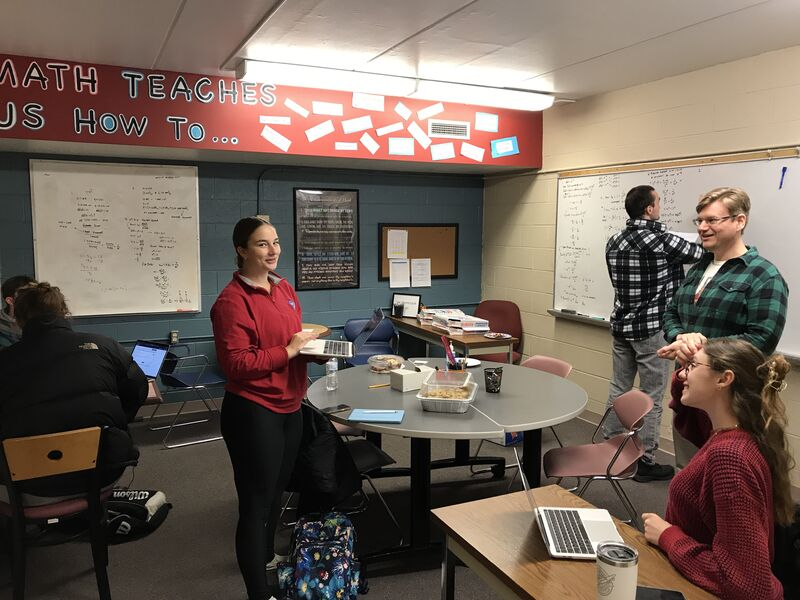
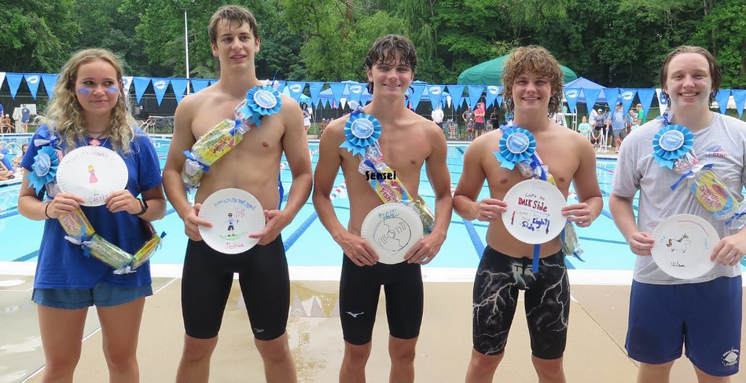

[2023-Now]
General Tutor - Shenandoah University Math Enrichment Center, Winchester VA
- Tutored 240+ students per semester in Math & CS (Statistics, Algebra, Discrete, Calculus I–III).
- Helped students debug code and clarify programming concepts.
- Proctored exams and managed assignment logistics.
General Tutor - Shenandoah University Math Enrichment Center, Winchester VA
- Supported professors in Intro and Intermediate programming classes (~25 students).
- Spent 11+ hours/week assisting with Python & Java assignments.
- Taught practical programming applications.

[2022–2023]
Programming Tutor - Code Ninjas, Burke VA
- Taught Scratch, JavaScript, Lua, and C# to ages 7–14.
- Managed classes of up to 20 students.
- Led outreach to local elementary schools and coordinated with community leaders.
[2021-2023]
Assistant Swim Coach - Burke Centre Swim Club, Burke VA
- Coached 18 & under swimmers (~50–100 athletes).
- Planned workouts, led practices, and communicated with parents & board members.
- Transitioned from volunteer (2021) to paid assistant (2021–2023).

[2021-2022]
Computer Science Volunteer TA - Robinson Secondary School, Fairfax VA
- Assisted ~25 computer science students.
- Supported teacher-led lessons in programming.
- Communicated progress and challenges with the instructor.